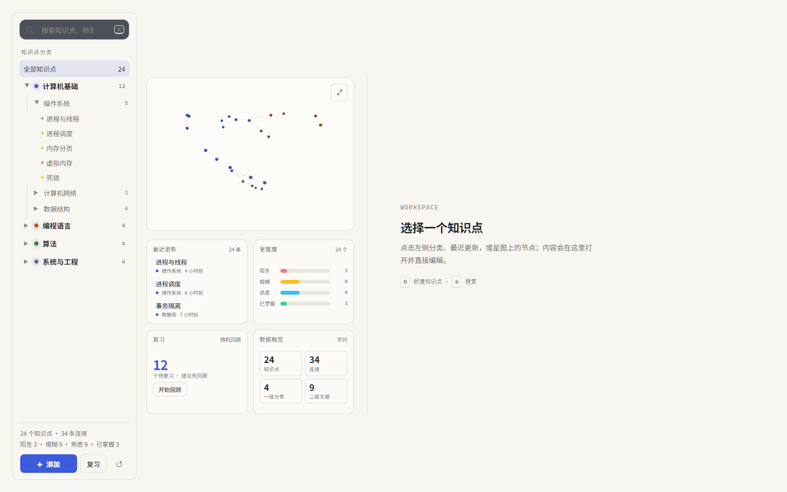
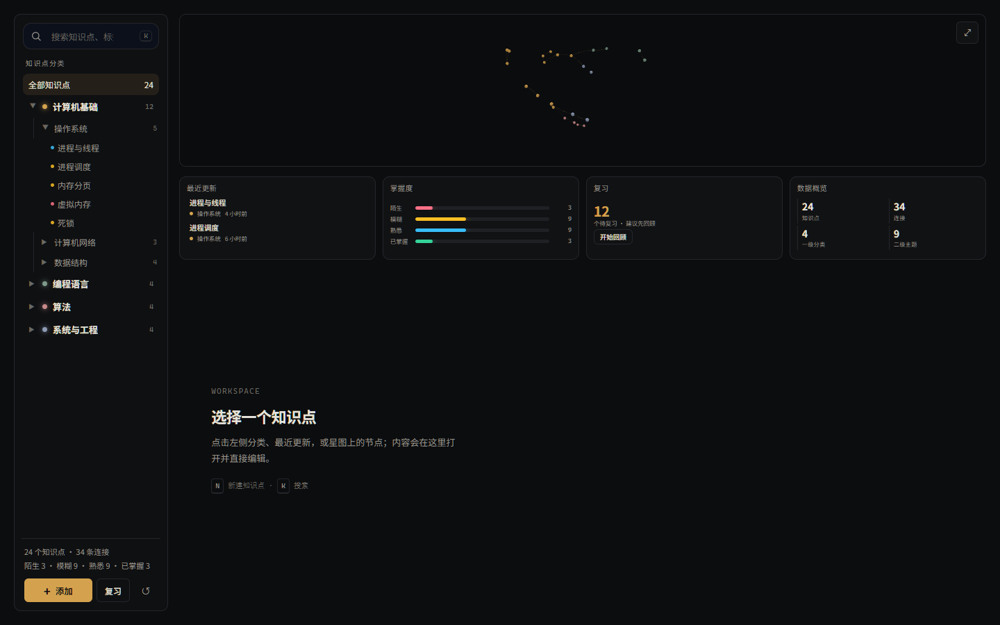

ROUND 2 / AIRY WORKSPACE
按你的反馈重做：两版留白方案
星图不再是主体，而是带交互的装饰/导航模块；四块数据也缩小。把大面积留给“工作区”——
未选择知识点时它保持安静留白，选中后编辑面板从工作区展开。两版结构相同，一浅一深；最终选定 08 Quiet。
已选定 08 Quiet。当前原型已在此基础上落地 v0.5 交互：知识点改为独立页面（不弹抽屉）、新建直接落空白文件、
删除掌握度与复习、树可自由展开收起、分类可删除；星图、最近更新、数据概览都是黄金比例卡片；星图节点为带名称的圆形节点。下方截图是布局阶段，功能以当前原型为准。
07
Air
浅色 · 阅读优先

左侧分类栏之后，星图缩成一个小卡片，四块数据变成左下 2×2 小卡；右侧是整块留白工作区。
整体暖白、细线、低对比，像一张安静的学习桌面。
浅色大留白编辑优先装饰性星图
打开 Air
08
Quiet
深色 · 更低密度

星图变成顶部一条很矮的“星带”，四块数据压成一排小卡，下面留出大面积深色工作区。
整体是接近黑的工作台，只有琥珀色作为强调，适合长时间专注。
深色低密度专注星带装饰
打开 Quiet